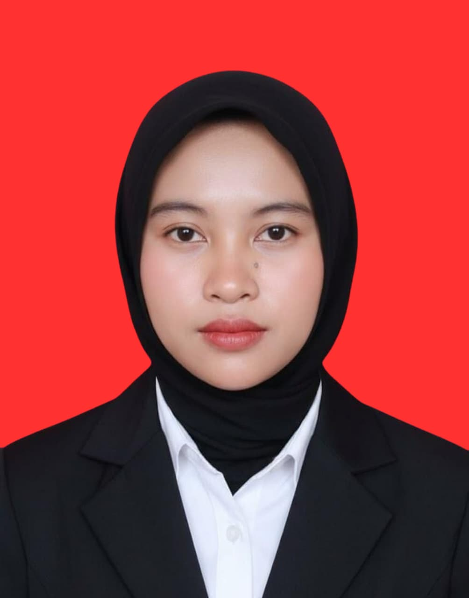

Mahasiswa S1 Sistem Informasi | Telkom University
Saya merupakan mahasiswa Sistem Informasi yang memiliki ketertarikan pada bidang teknologi, data, komunikasi, dan pengembangan sistem. Lulusan SMA Negeri 78 Jakarta dengan kemampuan dalam Microsoft Office, Google Workspace, desain grafis, editing video, dan analisis data. Saya tertarik mempelajari penerapan teknologi untuk meningkatkan efisiensi bisnis dan mendukung pengambilan keputusan. Saat ini, saya terus mengembangkan kemampuan teknis dan soft skill melalui perkuliahan, berbagai proyek, serta kegiatan kampus.
☎ +62 858-9160-3339
✉ nikitaayutridesriyanti@gmail.com
📍 Jakarta Barat, Indonesia
Kurikulum Merdeka
Teknologi, Data & Pengembangan Sistem
3.72
Mengambil dan mengedit dokumentasi visual untuk menggunakan kamera profesional dan software pengolah gambar. Berkolaborasi dengan tim media untuk memenuhi kebutuhan publikasi visual organisasi.
Membantu pelaksanaan program Pengabdian Masyarakat serta mengelola dan memvalidasi data riset dosen guna mendukung efisiensi operasional dan akuntabilitas kerja akademik. Dukungan operasional seperti menyusun dokumentasi dan laporan hasil kegiatan untuk mendukung kelancaran proses kerja serta administrasi akademik.